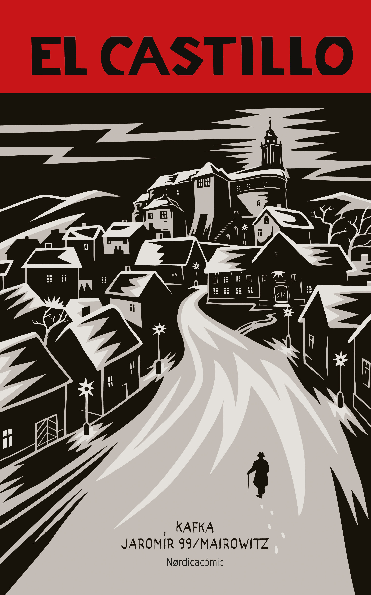
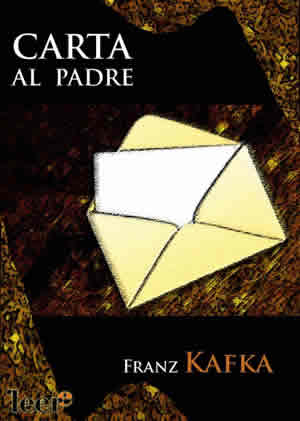
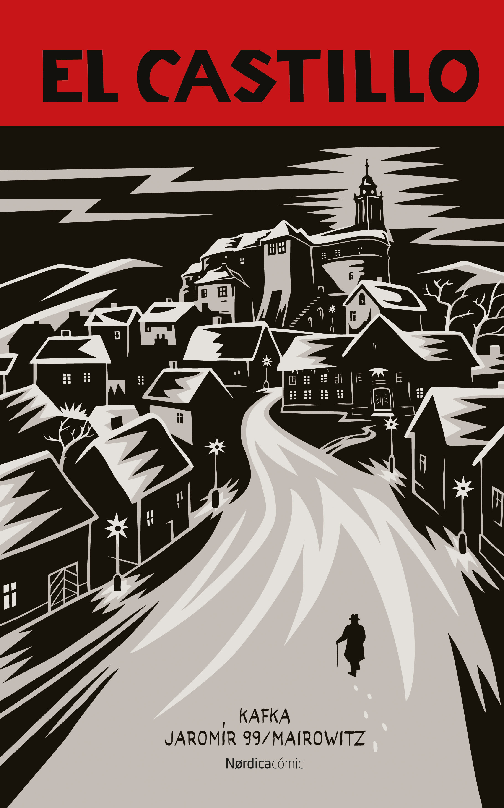
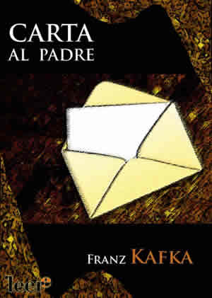

La metamorfosis o La transformación (Die Verwandlung, en su título original en alemán) es un relato de Franz Kafka publicado en 1915 que narra la historia de Gregorio Samsa, un comerciante de telas que vive con su familia a la que él mantiene con su sueldo, quien un día amanece convertido en un enorme insecto.
Capitulos:
 


